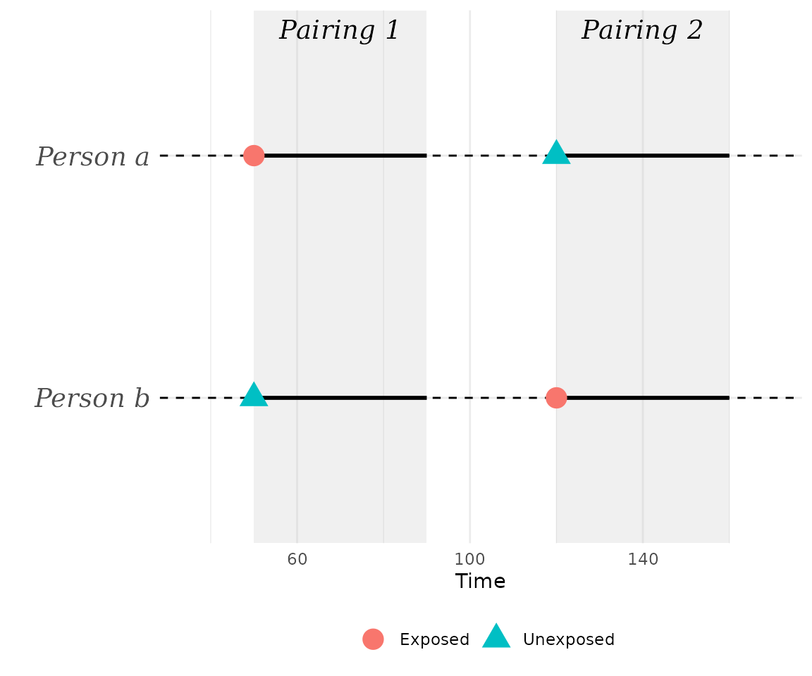
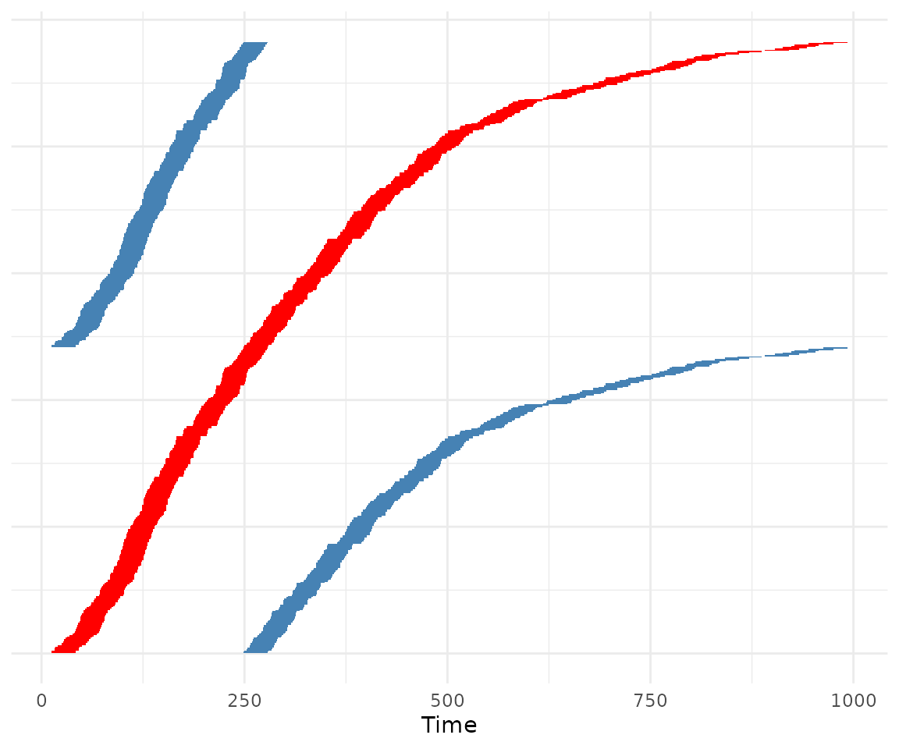
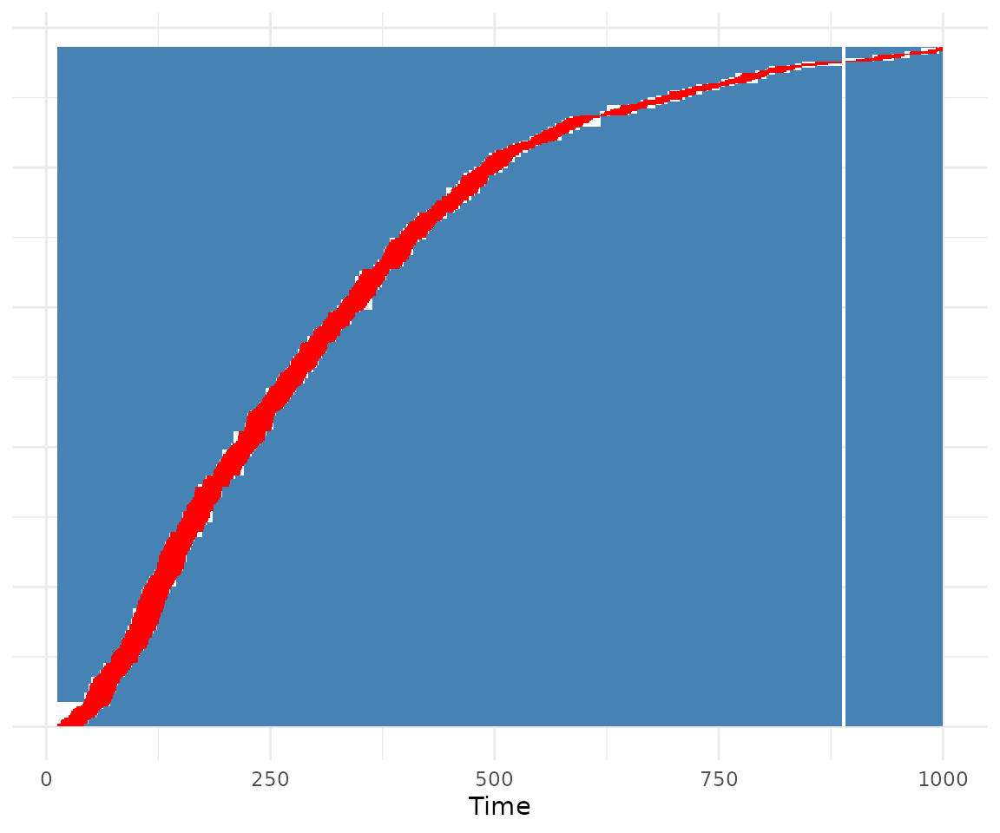
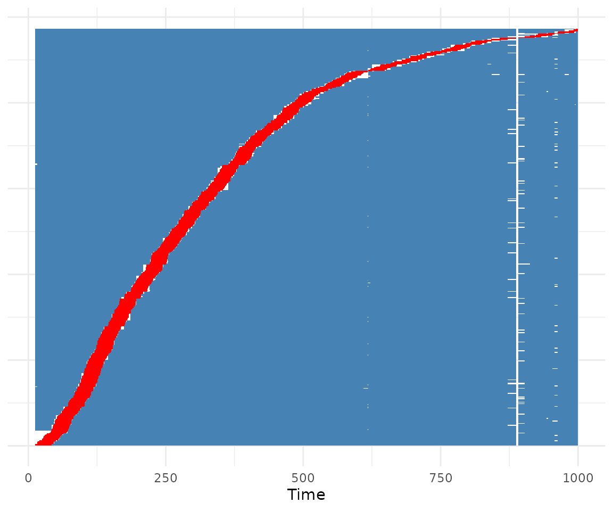

The Symmetric Pair Matching Design in R
Robin Denz
Source:vignettes/v_introduction.Rmd
v_introduction.RmdIntroduction
In this small vignette, we introduce the SPMD package,
which can be used to apply the Symmetric
Pair Matching
Design, introduced by Denz et al. (2026). In a
nutshell, it is a type of self-controlled method that automatically
adjusts for all types of time-invariant confounders, while also
automatically controlling for any confounding effects that arise through
time itself. It is similar to the self-controlled case series (SCCS)
design (Farrington 1995), but, contrary to the SCCS design, it does not
require the user to model time trends. The SPMD package is
a full implementation of the method, including multiple ways to create
the required matches, confidence interval estimation and convenient
plotting methods.
The package is currently not available on CRAN, but may be installed
using the remotes package:
remotes::install_github("RobinDenz1/SPMD")We load some packages here, although not all of them are required for
usage of SPMD. Some are only needed for the specific
contents of this vignette.
What is the Symmetric Pair Matching Design?
In the following we give a very informal and short introduction to the SPM design. We highly encourage readers and users of the method to read the associated paper instead (Denz et al. 2026), which describes the method and its associated assumptions in much more detail. The goal of the SPM design is to estimate the causal relative risk of a binary time-dependent exposure on a possibly re-current binary time-to-event outcome. A classic example would be the effect of a Covid-19 vaccination on the occurrence of acute myocarditis in a short period (for example 24 days) after vaccination. Importantly, the exposure is assumed to be transient, e.g. it is assumed that it only has an effect on the outcome for a known duration after exposure, after which the risk goes back to the persons baseline level.
Under the assumption that there are no time-dependent confounders of the relationship between vaccination and the development of acute myocarditis, two potential sources of confounding remain: (1) time-invariant confounders, such as sex or genetics and (2) time itself. The latter my arise when the probability for vaccination is time-dependent and the probability for the outcome is also time-dependent, irrespective of individual characteristics. In vaccine-safety studies, this is frequently the case, especially for seasonal vaccinations such as influenza vaccines. Briefly, the method adjusts for both types of confounding through a special pair matching structure, as its name suggests.
Individuals with exposures are matched to each other, so that they can be used as control during the exposure period of the matched individual. For example, suppose there are two individuals, one vaccinated on day 50 and one vaccinated on day 120. We assume a risk period of 40 days. The resulting pairing of these two individuals would look like this:

At , person is exposed and his risk period of length 40 begins. Since person is unexposed at this time, we can use the same duration as a control for person . We then do the exact same thing at , when person is exposed. In a table, we would write down this pair as:
| individual | time | exposure | index |
| a | 50 | 0 | a1 |
| b | 50 | 1 | b1 |
| b | 120 | 0 | b2 |
| a | 120 | 1 | a2 |
It can be shown mathematically that under fairly weak assumptions of multiplicative effects, the following equation holds for each individual pairing:
where are the rate parameters of Poisson distributions that describe the number of events in the 40 day risk period in each “group”. Of course, we cannot directly calculate this value, because those rates are unknown. We do, however, observe the event counts in those times, which is enough to define estimators. Those are described further down in this vignette, after we have introduced the required data and pair matching algorithms.
Required Data
In principal, we only need information on two variables to apply the
symmetric pair matching design: the exposure status and the outcome.
Additionally, we need to know exactly when the exposures and
outcome events occurred and for whom. The most flexible and standard way
to encode this information usually used in time-to-event analysis is the
start-stop or counting process format. This
corresponds to the data format used to fit coxph() models
(see the famous survival package) and is required by the
SPMD package as well.
To give an example, we will use the sim_example_data()
function of this package:
set.seed(1234)
data <- sim_example_data(n=500)
head(data)
#> Key: <.id, start>
#> .id start stop X A Y
#> <int> <num> <num> <num> <lgcl> <lgcl>
#> 1: 1 0 249 -1.2070657 FALSE FALSE
#> 2: 1 249 289 -1.2070657 TRUE FALSE
#> 3: 1 289 1000 -1.2070657 FALSE FALSE
#> 4: 2 0 221 0.2774292 FALSE FALSE
#> 5: 2 221 261 0.2774292 TRUE FALSE
#> 6: 2 261 623 0.2774292 FALSE TRUEThis function internally uses the simDAG package to
simulate this data (Denz & Timmesfeld 2026). Here, each person is
identified by a unique person identifier contained in the
.id column. A person may have multiple rows, where each row
corresponds to a period of time (defined by the start and
stop columns) in which no variables changed for that
individual. For example, the first row of this dataset shows that from 0
to 249, individual with .id = 1 was unexposed (exposure is
denoted by column A) and had no event (the outcome is shown
in column Y). Exactly at
,
the same person is then exposed for the first time and stays exposed
until
.
In other words, the exposure, and potentially other covariates, are
coded so that the intervals are left-closed or
right-open, often denoted using [).
The outcome events should be coded slightly differently. Events are
assumed to happen exactly at the time denoted by stop. For
example, individual .id = 2 experienced an event at exactly
in this example dataset. This data format has two main advantages.
First, it allows usage of continuous time. Secondly, it is much more
memory efficient than the full long-format, because we usually have to
store way less rows directly. To create such datasets, the
tmerge() function of the survival package, or
the merge_start_stop() function from the
MatchTime package (see https://robindenz1.github.io/MatchTime/) may be
used.
General Syntax
Once such a dataset exists, it is very easy to apply the symmetric
pair matching design. We simply need to call the
sym_pair_matching() function on it, which can be done like
this:
out <- sym_pair_matching(Surv(start, stop, Y) ~ A, data=data, id=".id",
pairs="all", estimator="moments", risk_period=30)The function uses the classic time-to-event formula interface, in
which the Surv() function is used to define the beginning
(start) and end (stop) of the time intervals,
as well as the outcome (Y) in this order. The right-hand
side of the formula should only contain the exposure (A).
In real applications, users are of course free to use any other names.
Additionally, we have to specify the unique person identifier
(id), the data in which we find all of these
columns, the duration of the risk period after exposure
(risk_period), as well as the method to generate the
matched pairs (pairs) and which estimator to use
(estimator). Most of these arguments are discussed in
greater detail below.
Once we have created an SPMD object using this function,
we can show the results using the associated summary()
method:
summary(out)
#> Symmetric Pair Matching using an estimating equation based estimator
#> Formula: Surv(start, stop, Y) ~ A
#> Risk period: 30
#>
#> No. individuals in data = 500
#> No. exposed individuals = 339
#> No. unique exposure times = 339
#> No. exposed individuals with event(s) = 339
#> 51233 symmetric pairs were created
#> 94.21% of the included observation time was used
#>
#> Final estimate: 2.343
#>
#> Estimated using: exp(0.5 * log(225/41))Creating the Matched Pairs
The sym_pair_matching() function implements different
options to create the matched pairs. In the following, we give an
overview of these options and show how to use them.
One unique Pairing
The first option to create pairs is to use each person / exposure
period in exactly one pairing. For example, if each person has only a
single exposure time, that person would be part of exactly one matched
pair. This can be done in sym_pair_matching() by using
pairs="one" like this:
out <- sym_pair_matching(Surv(start, stop, Y) ~ A, data=data, id=".id",
pairs="one", estimator="none", risk_period=30)Here, we set estimator="none" to skip any actual
estimation for now. The function then only generates the matched pairs,
which can be inspected directly using:
head(out$d_matches)
#> Key: <.id_pair, .group>
#> .id .time .max_t .id_pair .A .group .end_time .n_events
#> <int> <num> <num> <int> <lgcl> <num> <num> <int>
#> 1: 3 12 1000 1 FALSE 1 42 0
#> 2: 114 12 1000 1 TRUE 2 42 0
#> 3: 114 249 1000 1 FALSE 3 279 0
#> 4: 3 249 1000 1 TRUE 4 279 0
#> 5: 319 12 1000 2 FALSE 1 42 0
#> 6: 493 12 1000 2 TRUE 2 42 0We can also inspect the used times of the matches visually, using the
associated plot() method:
plot(out)
In this plot, each individual that was included in the pair-generation process forms one line of the plot (the y-axis). The red segments denote time under exposure. Blue segments denote time without exposure, that was used at some point as control in a matched pair. White segments denote observation time that remained unused.
Internally, the dataset of all individual / exposure combinations is first ordered by exposure time. Then, the dataset is “cut in half”. The first person / exposure combination (e.g. row in the dataset) of the first half is then matched to the first row of the second dataset. This is not guaranteed to work. Under some extreme distributions of exposure times, this may fail, making it a little less robust than other methods. Additionally, since we only use each exposure instance in one pair, we throw out a lot of information that we could include using the other methods. Therefore, this method is generally discouraged.
All Possible Pairs
The most statistically efficient variant is to simply use all pairs
that could possible be formed. This can be done using
pairs="all" instead:
out <- sym_pair_matching(Surv(start, stop, Y) ~ A, data=data, id=".id",
pairs="all", estimator="none", risk_period=30)If we use plot(), we can directly see that a lot more of
the observation time per person is used in the matched dataset:
plot(out)
Note that even though all possible matches were generated, the plot still includes some white areas. These are observation times that could not be used in any of the possible matches. Although using all possible matches is statistically very efficient, it is very heavy computationally. The upper limit of possible matches grows very fast and can be calculated as
where is the number of unique individual / exposure instances. Due to this fast growth, it might not even be possible computationally to generate all pairs with large . Luckily, we do not actually need to do this. It is perfectly acceptable to use a fixed large number of randomly chosen pairs instead.
Fast random selection
The package implements a random selection of pairs in two ways. The
first one is a fast selection algorithm, which generates all possible
pairs first and then takes a random sample of size n_pairs
from the resulting dataset. This can be done using
pairs="random2":
out <- sym_pair_matching(Surv(start, stop, Y) ~ A, data=data, id=".id",
pairs="random2", estimator="none", risk_period=30,
n_pairs=100000)Here we used a 100,000 matched pairs, as specified through the
n_pairs argument. If we run plot() on this
again, we can see that we are still using quite a lot of the observed
time per person at least once:
plot(out)
This may work for fairly large datasets and it is fairly fast, but
eventually it will fail as well due to the required RAM of the first
step. If it fails, we may use pairs="random1" instead.
Memory efficient random selection
To circumvent the problem of having to create all possible matches
first, we may use an iterative algorithm instead. Here, we randomly
sample batch_size / 2 rows from the individual / exposure
dataset and match them to further, also randomly sampled,
batch_size / 2 rows. We then remove duplicates and invalid
matches. All generated matches are then added to the output. If we have
created n_pairs matches, we stop. If we have not, we repeat
the process until we found enough matches or until
rand_max_iter iterations were executed. This can be done
using pairs="random1":
out <- sym_pair_matching(Surv(start, stop, Y) ~ A, data=data, id=".id",
pairs="random1", estimator="none", risk_period=30,
n_pairs=100000)It is often quite a bit slower than pairs="random2",
because of its iterative nature and the sometimes large amount of
invalid or repeated matches created during the iterations. The main
advantage is that it can always be used, regardless of how many matches
are possible.
Which pair generation method should I use?
The amount of options naturally raises the question, which option is
the best. Whenever using estimator="moments" (which should
be used in most cases), we recommend trying pairs="all"
first, because it is the statistically most efficient option. If this
fails due to the amount of matches being too large, it is best to try
pairs="random2" next, with a large number of
n_pairs such as 1,000,000. If that still fails due to RAM
issues, pairs="random1" is the best alternative (again with
a large value for n_pairs). One-to-one matching as
implemented in pairs="one" should generally only be used if
the dataset is gigantic, or when using
estimator="glmm".
Estimators
After having created the symmetric pair matches, we still have to
apply an estimator to obtain the relative risk of interest. The package
implements two main estimators, the main empirical moments based
estimator (estimator="moments") and an experimental
estimator based on a generalized linear mixed Poisson model
(estimator="glmm").
Empirical moments based estimator
Given pairs of individuals, the estimator is defined as:
where
,
,
and
denote the observed event counts in each “index” inside a pair.
Essentially, we average over individual level products of events in both
the denominator and numerator. By taking exp() of the
resulting
,
we obtain an estimate of the causal risk ratio. In this package, this
estimator can be used by setting estimator="moments".
Generalized linear mixed model based estimator
An alternative experimental estimator is based on a generalized linear mixed Poisson model, where an individual and time-specific random effect is modeled directly. This method may be more efficient than the moments based estimator, because it utilizes information across pairs more efficiently, but it is also fairly difficult to fit. In many cases, it will not converge in practice. We recommend not using this estimator for now, as its theoretical properties have not been studied in detail.
Confidence interval estimation
The estimators by themselves only return a point estimate (e.g. an
estimate of the relative risk). In most applications, we are, however,
also interested in estimating the uncertainty of this point estimate.
This is often done using confidence intervals. We may also wish to test
the hypothesis, that the true relative risk is 1, which is often done
using p-values. Currently, no equation exists that could be used to
directly estimate the standard error of the estimate, which would be
required for both applications. We therefore usually rely on
bootstrapping, which is implemented into the
sym_pair_matching() function through the
bootstrap argument:
out <- sym_pair_matching(Surv(start, stop, Y) ~ A, data=data, id=".id",
pairs="all", estimator="moments", risk_period=30,
bootstrap=TRUE, n_boot=1000)
summary(out)
#> Symmetric Pair Matching using an estimating equation based estimator
#> Formula: Surv(start, stop, Y) ~ A
#> Risk period: 30
#>
#> No. individuals in data = 500
#> No. exposed individuals = 339
#> No. unique exposure times = 339
#> No. exposed individuals with event(s) = 339
#> 51233 symmetric pairs were created
#> 94.21% of the included observation time was used
#>
#> Final estimate: 2.343
#> 95% CI: [1.356; 3.855]
#> P-Value: 0.006
#>
#> Estimated using: exp(0.5 * log(225/41))
#> Bootstrap CI based on 1000 bootstrap replicationsHere, we first draw n_boot random samples with
replacement from all individuals, where the size of the samples is equal
to the number of unique individuals in the dataset. Then, we apply the
pair matching to each of these datasets. Afterwards, we apply the
estimator to all matched datasets. The result is a vector of
n_boot bootstrap estimates. To estimate a 95% confidence
interval, we use the percentile method, in which the lower 0.025 and
upper 0.975 quantiles of this bootstrap distribution is used directly.
P-values are calculated similarly, although with the caveat that a
bootstrap p-value can never be smaller than 1 / n_boot.
We can inspect the distribution of the bootstrap samples directly using something like:
Ideally, the distribution should look more or less Gaussian. In any
case, it is recommended to set the number of bootstrap samples high
enough so that the distribution looks fairly smooth.
n_boot=1000 is a good start, but may not always be
sufficient.
Bootstrapping may become fairly computationally expensive,
particularly with large samples and pairs="all" or
pairs="random1" / pairs="random2" when using
many matches. We have implemented some computational tricks that keep
the computation time low, particularly when using
pairs="all". In this case, the pair matching is only done
once and the bootstrap samples are generated directly from all pairs
through re-weighting them. This is possible because repeated inclusion
of individuals never generates new samples (individuals cannot match
themselves, because the risk periods would overlap). Additionally, the
n_cores argument may be used to run the bootstrap
calculations on multiple processing cores, potentially saving much more
time as well.
Some subtleties
Censoring
Right-censoring is directly supported by this package. The underlying algorithm uses pairs in which no observation period is censored, and pairs in which the right-censoring occurs after the larger of the two exposure times in a pair. In the latter case, both individuals inside the pair are censored at the minimum censoring time when calculating and . This way, the time effects still cancel out. For more information and required assumptions regarding censoring, please consult the associated paper (Denz et al. 202X).
Bounds of the risk period
The bounds argument allows users to specify whether /
which endpoints of the risk periods defined by the exposure times and
risk_period arguments should be included or excluded. It is
particularly important to specify this argument if the measurements of
exposure and outcome times is done in discrete time. See
?sym_pair_matching for a full explanations on supported
values.
Time zero
In randomized controlled trials, time zero (e.g. the begin of the observation period) is well defined for each participant in the study. This is not necessarily the case for retrospective studies. For example, when analyzing electronic health records based data, multiple choices for time zero, such as the date of a diagnosis or the first date of eligibility, may be appropriate. Theoretically, any time scale may be used for the application of SPMD. It is, however, crucial that the choice of time scale reflects the time trends the user wants to adjust for. For example, if time trends in the outcome are caused by calender time and are shared across individuals, the time scale should be the calender time. If, on the other hand, the time trends are anchored to time since a diagnosis, than time zero should be the date of diagnosis.
References
Denz, Robin, Filippo Saatkamp, Katharina Meiszl and Nina Timmesfeld (2026). “The Symmetric Pair Matching Design: A Self-Controlled Method with Automatic Adjustment for Time Effects”. arXiv Preprint. doi: 10.48550/arXiv.2608.25979.
Farrington, C. Paddy (1995). “Relative Incidence Estimation from Case Series for Vaccine Safety Evaluation”. In: Biometrics 51.1, pp. 228–235. doi: 10.2307/2533328.
Denz, Robin and Nina Timmesfeld (2026). “Simulating Complex Cross-Sectional and Longitudinal Data using the simDAG R Package”. Journal of Statistical Software 116 (2), doi: 10.18637/jss.v116.i02.